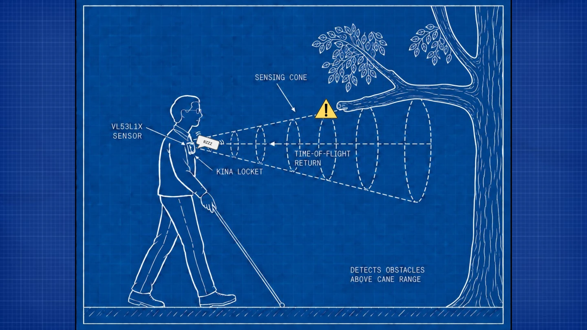
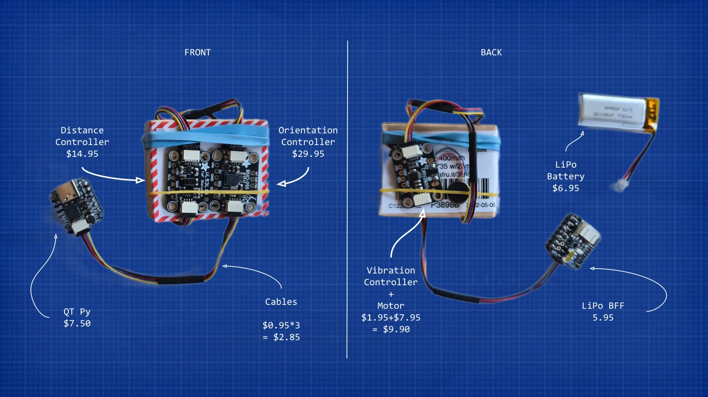
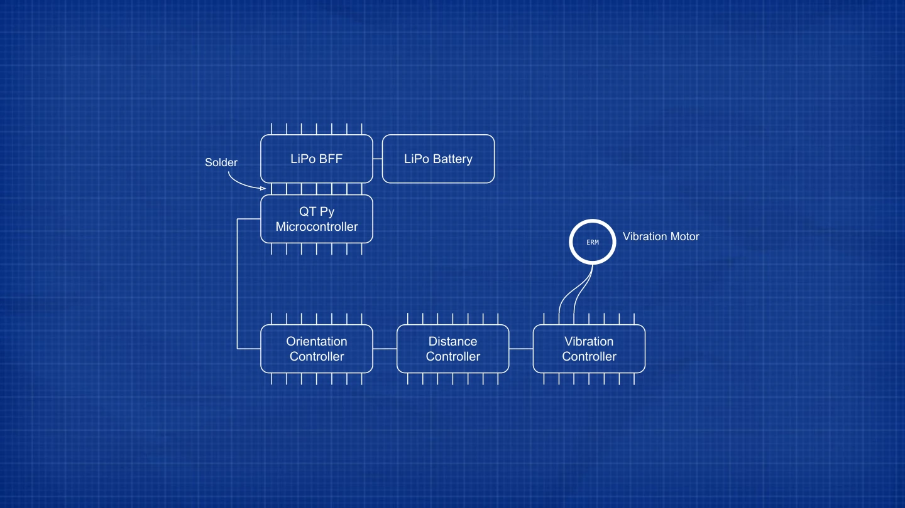

Assistive hardware · Product design
Kina
A small wearable prototype that turns nearby obstacles into haptic signals, exploring awareness above the reach of a white cane.
- My role
- Design, electronics & firmware
- Format
- Wearable hardware
- Tools
- ToF sensing, orientation sensor, embedded C++
- Stage
- Working prototype

The question
The idea began after I saw a man using a cane encounter an overhanging obstacle. I wanted to explore how a small device could provide another cue about obstacles near the head and shoulders.
Making the idea wearable
My first concept used a helmet and audio feedback. Feedback raised two practical questions: would someone want to wear it, and would the alert remain useful in a noisy environment? I moved toward a smaller brooch or locket with vibration feedback.
The prototype combines a time-of-flight distance sensor, an orientation sensor, a QT Py microcontroller, a rechargeable battery, and a vibration motor. Haptic pulses become stronger as an obstacle gets closer.
When the hardware questioned the code
A distance reading alone wasn’t enough. Bending down could make the device treat the ground as an obstacle, so I added orientation checks. The motor’s vibration also interfered with motion readings, creating another source of false alerts to debug.
Those problems made physical testing central to the project. A program could look correct while still misunderstanding what the sensor was experiencing.
What comes next
The next step is testing with blind and low-vision users to understand whether the feedback is useful, comfortable, and understandable in practice.

